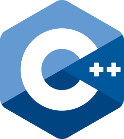

C++ Programming Language
C++ is a powerful programming language widely used in computer science and software development. It was created as an extension of the C programming language and adds support for object-oriented programming while maintaining the efficiency and performance that made C popular.

History of C++
C++ was developed in the 1980s by Bjarne Stroustrup, a Danish computer scientist. The goal was to improve the C language by introducing features that help developers organize and manage complex programs.
Over time, the language evolved and became standardized. Today, C++ is maintained through an international standards process that continues to introduce improvements while preserving compatibility with older code.
Key Features of C++
High Performance
C++ programs are compiled directly into machine code, which allows them to run very efficiently. Because of this, C++ is often used in situations where speed and resource management are important.
Object-Oriented Programming
C++ supports object-oriented design through features such as classes, inheritance, and polymorphism. These concepts allow developers to structure programs around objects and reusable components, which can make large software projects easier to maintain.
Memory Control
Unlike many higher-level languages, C++ allows programmers to manage memory directly using pointers and manual allocation. This level of control can improve performance but also requires careful programming to avoid errors.
Common Uses of C++
C++ is widely used in systems where performance and efficiency are critical. Many operating systems, game engines, and high-performance applications are written in C++. The language is also used in embedded systems, financial software, and applications that require real-time processing.
Because of its speed and flexibility, C++ remains one of the most important languages in modern computing, especially in areas that require close interaction with hardware or highly optimized performance.
Source: The New Stack - Introduction to C++ Programming Language